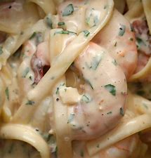
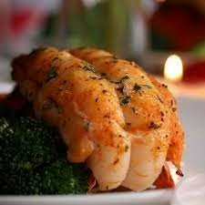

|  |
Garlic shrimp Bacon Alfredo |
Ingredientsfor 4 servings 6 slices bacon, chopped 1 lb shrimp(455 g), peeled and deveined 1 teaspoon salt ½ teaspoon black pepper ½ medium yellow onion, diced 1 medium tomato, diced 3 cloves garlic, minced 2 cups heavy cream(480 mL) 1 lb fettuccine(455 g), cooked 1 cup grated parmesan cheese(110 g) ½ cup fresh parlsey(20 g),chopped PreparationIn a large pot, cook the bacon over medium heat until crispy. Add the shrimp, salt, and pepper and cook until the shrimp is pink and opaque. Remove the shrimp and bacon from the pot, leaving any fat from cooking the bacon behind. Add the onions, tomatoes, and garlic to the pot and cook until the garlic is starting to brown. Add the cream and bring to a boil. Once the cream is boiling, add the fettuccine. Return the shrimp and bacon to the pan, along with the Parmesan cheese and parsley. Stir until the cheese melts and the sauce coats the shrimp and pasta nicely. Nutrition Calories: 2185 Fat: 125 grams Carbs: 192 grams Fiber: 9 grams Sugars: 20 grams Protein: 103 grams |
|
|  |
Baked Lobster Tails |
Ingredientsfor 2 servings 8 oz lobster tail(225 g), 2 tails 3 tablespoons butter, melted 1 teaspoon salt 1 teaspoon black pepper 1 teaspoon garlic powder 1 teaspoon paprika 1 teaspoon fresh parsley, chopped 1 teaspoon lemon juice 2 wedges lemon, to serve broccoli, cooked, to serve preparationUsing a clean pair of scissors or kitchen shears, cut along the middle of the top of the shell towards the fins of the tail, making sure to cut in a straight line. Do not cut through the end of the tail. Using a spoon, separate the meat from the two sides of the shell, then lift the meat up and out from inside the shell. Press the two sides of the shell together, then lay the meat over the seam where the two shells meet. If you are having difficulty opening the shell up to lift out the meat, flip the tail over and make cuts along the carapace where the legs meet the bottom part tail. This will help break the rigid structure of the shell and allow it to be more flexible. While cutting through the shell, you may have also cut into the meat, which is perfectly okay. Make a shallow cut through the middle of the lobster meat so that you can peel down the thin layer of meat over the sides. This gives the lobster tail its signature look. Preheat oven to 450°F (230°C). In a small bowl, combine the butter, salt, pepper, garlic powder, paprika, lemon juice, and parsley, then brush the mixture evenly over the lobster meat. Place the tails onto a baking sheet, then bake for approximately 12-15 minutes, until the lobster is fully cooked but not rubbery. Serve with a side of broccoli and a lemon wedge. |